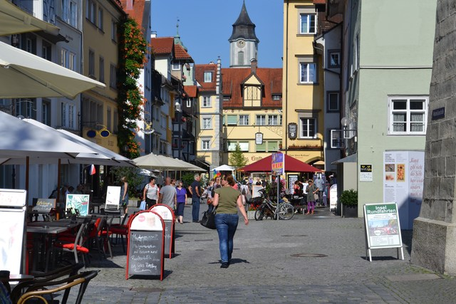
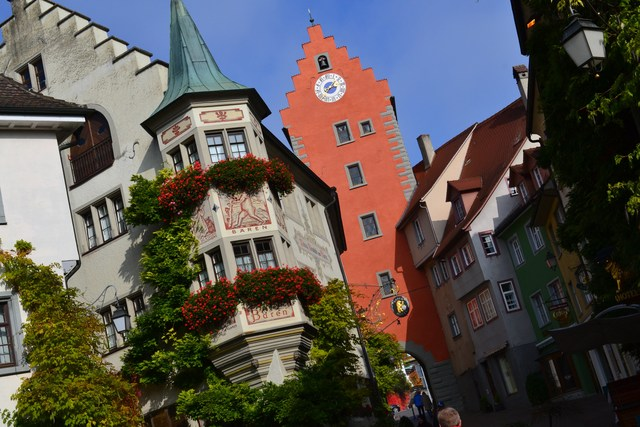
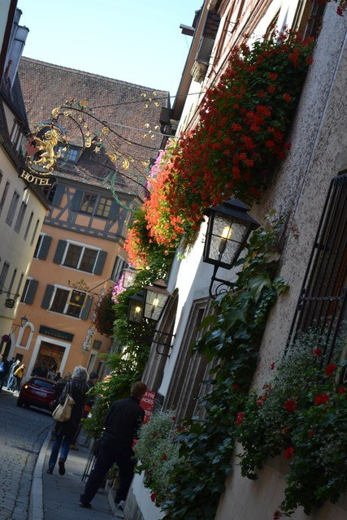
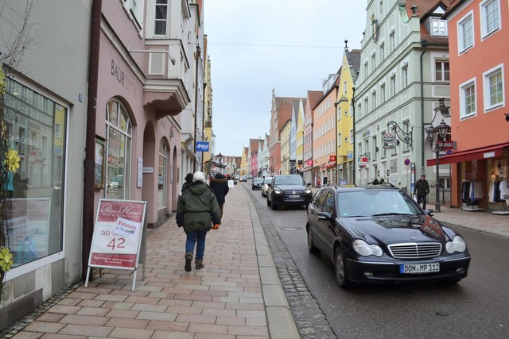
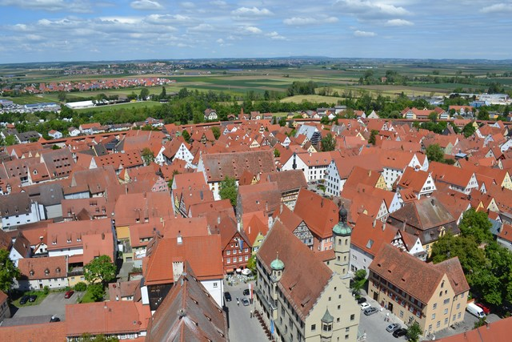
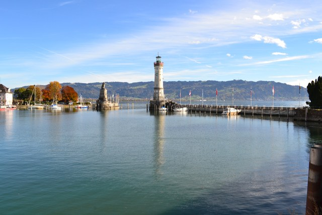

4年半ぶりの再訪。ドイツにしては珍しくこの冬まだ一度も雪が降っていないらしい。この日は1月の冷たい雨が石畳を濡らしていた。
お家に飾る絵の買い付けに再び訪れた。 なんとなく入ったカフェのテラスで紅茶を飲みながら、教会の塔の影がゆっくりと石畳の広場を横切っていくのとか雲が空を流れていくのを眺めた。
古い門の入り口で絵を売っているおじいさんがうとうととまどろんでいる。 この門は花の咲き誇るブルク公園へと続いている。門の先には光の世界がある。
市庁舎のてっぺんから眺めたローテンブルクの街並み。
クレクリンゲンを訪れた帰り道に寄ったローテンブルク。 3年前にローテンブルクを訪れたとき、 ブルク公園の周りでローテンブルクの美しい街並みを描いた油絵のアトリエをいくつか見かけた。 今回はその絵を買いに行ったのだった。
真夏の日差し、赤いゼラニウムの花、石畳の路地。コントラストが美しい。
ロマンティック街道沿いの街、ランツベルク・アム・レヒ。 レヒ川の堤の上に位置する。この日は雪が降りしきりとにかく寒かった。 パステルカラーに彩られた建物はいかにもロマンティック街道らしいが、 ローテンブルクやディンケルスビュールと比べるとやや色彩に欠ける印象は拭えない。
マリア被昇天教会。
2回めのリンダウ。 週末にミュンヘンからロンドンに向かうときにリンダウの街に滞在することにした。 リンダウに泊まった理由のひとつは小さな島に浮かぶこの街が好きだから。 もうひとつは、教会のページで書いているがシュタインハウゼンの巡礼教会を訪れるためだ （シュタインハウゼンの巡礼教会は到達難易度が高く、ミュンヘンからだと日帰りできないため）。 ちなみに、この滞在のあとリンダウからロンドンまで電車で行ったのだが（この移動には当然特急を使った）、 12時間かかった・・・。


裏路地がとてもいい。
灯台を上る。5年ぶりだ。
島の西端の岬から眺める夕日。ボーデン湖が暮れてゆく。

ネッカー川沿いの街。「ドイツでもっともシルエットの美しい街」に選ばれている。 この街は古城街道に属するが、街全体の雰囲気はメルヘンなのでこちらのページに分類した。
街のシンボル、「青の塔」からの眺め。赤茶色の切妻屋根のおうちが可愛い。
街歩きの楽しみのひとつが裏路地めぐり。
この日は曇っていて写真ではわかりづらいが、新緑の淡い萌木色がとても美しかった。
ボーデン湖畔の街、メーアスブルク。 この街には線路が通っていない。 ボーデン湖畔の北側を走る線路が、地形上の理由なのかメーアスブルクのところだけ陸地部分を迂回しているのだ。 だからこの街にはバスで行くことになる。 ビルナウの巡礼教会を見たあと訪れた。 ドイツには○○街道というのがたくさんある、メーアスブルクは「木組みの家街道」に属する。
ボーデン湖畔の街には丘に沿ってぶどう畑が広がっている。 なぜかはわからないがこの風景がぼくはとても好きだ。
メーアスブルクの街並み。湖畔の丘にできたこの街は坂道と階段と裏路地が入り組んでいる。

メーアスブルクの街の高台には可愛らしい古城が立つ。
港のプロムナードから。
空が霞んでいて見づらいが写真の左側がボーデン湖。 晩秋のボーデン湖を進む船はメーアスブルクの港とコンスタンツの港を結んでいる。
南ドイツの黄葉は美しい。
2度めのローテンブルク。 晩秋の黄葉に染まったこの街を眺めてみたかったのだ。 最初に訪れたときは曇り空だったが今回はきれいに晴れ上がった。
ローテンブルクの中世さながらの街並みは本当に美しいと思う。 「ミュンヘンから日帰りできるところでおすすめはないですか」と聞かれたら、 （観光ガイドブックに載ってないようなわけのわからない場所をのぞけば）この街を勧めると思う。

市庁舎のてっぺんから街を見渡す。
ブルク公園の黄葉。美しい。
ローテンブルクの名物といえば「シュネーバル（スノーボールの意味）」というお菓子。 バターと小麦粉とお砂糖で練った生地を太いきしめんみたいに伸ばして、それを球状に丸めて揚げたあと、 チョコレートでコーティングしてある。 小さいやつを1個食べるとおなかがいっぱいになる。
聖ヤーコプス教会には、リーメン・シュナイダーの木像彫刻の傑作「聖血の祭壇」がある。 写真では伝わらないかもしれないが、この彫刻は「動き（躍動感）」を持っている。 細部に目を移すと、衣服のひださえもが非常に繊細に表現されている。 木像彫刻でこんな動きが表現できるのかと感動した。
ローテンブルクからロマンティック街道を北上したところに、クレクリンゲンという小さな村があり、 その村の教会にもリーメン・シュナイダーの傑作といわれる別の木像彫刻が飾られている。 いつか訪れてみたいと思う（訪れようとしたことは2度あるのだが、 この村は到達難易度が非常に高く辿り着くのに失敗している）。
話は変わるが、ぼくは博物館というものがいまいち好きではない。 いろいろな作品を一度に眺められるのは便利なのだが、 作品が本来存在するべきコンテキストを失っている結果、ちぐはぐな感じがするのだ。 博物館で感動したことはあまりない。 このリーメン・シュナイダーの木像彫刻も、この教会に飾られていてこそ素晴らしい作品なのだと思う。
ロマンティック街道の街、ディンケルスビュール。 この街はやや行きづらい。というのも鉄道が廃線になってしまって、 ミュンヘンからだと電車と路線バスを乗り継いで5時間近くかかるのだ。
木組みの家々がとても可愛いメルヘンの世界。 おとなりのローテンブルク・オプ・テア・タウバーはやや観光化されすぎてしまっているきらいがあるが（日本人観光客も多すぎる）、 ディンケルスビュールは落ち着いて中世の街並みを楽しめる。

ロマンティック街道の街、ドナウヴェルト。 天気がいまひとつだったせいもあるが、 他のロマンティック街道の美しい街並みと比べてしまうといまひとつ、という印象。

ロマンティック街道の街、ネルトリンゲン。 この街の最大の特徴は、街全体をぐるっと取り囲む市壁が完全な形で保存されているということ。 市壁の内側には歩いて通れる通路があって、ぐるっと一周歩くことができる。一周4kmほど。
市壁の通路から街の中心としての聖ゲオルク教会を望む。赤茶色の切妻屋根の家並みが良い。
聖ゲオルク教会の塔のてっぺんに登ると、ネルトリンゲンのまぁるい街並みを360度見渡すことができる。 市壁がぐるっと回っているのがわかる。

ネルトリンゲンの街は、隕石が衝突してできた巨大なクレーターの上に位置する。 進撃の巨人のモチーフにもなった街だ。 観光ガイドブックではあまり見かけないが、 個人的にはロマンティック街道の街ではローテンブルク・オプ・テア・タウバーと並んで気に入った街である。
壮大なミスをやってしまった。 ローテンブルクの駅が近づいてきて、さて降りようと思ったのだが電車が止まらない。 電車は駅を通過してしまった（注：あとで知ったことだが、ドイツの過疎路線には運転士にボタンで知らせないと通過してしまう駅がある）。 どうしようと思って車掌さんに質問してみたところ、 「あー、君も間違えちゃったんだね」と言われて渡されたパンフレットがこちら。

丁寧な言葉遣いがよりいっそう心に刺さる。 行きたかったローテンブルク・オプ・テア・タウバーは250kmも離れているので、もはやどうすることもできない。 でもこのパンフレットは素敵すぎる。 いつまでも忘れられない貴重な体験をさせてもらった。 これだから南ドイツの「フィールドワーク」はやめられないのだ。
さて、日を改めて今度は正しいローテンブルク・オプ・テア・タウバーを訪れてみた。 この街は、入り組んだ路地、木組みの家々、塔建築、市壁など、 中世の美しい街並みが非常によく保存されている。 日本人にも有名な観光地で、日本語のメニューが書かれたレストランも見かけるほどだ。
リンダウの街は、江ノ島のように、ボーデン湖畔に浮かんだ島の上にある。 1時間あれば一周歩いて回れるような小さな島だ。 その小さな島の中に、旧市街、港、教会、中央駅、公園、灯台などがぎゅっと詰まっている。 どこかの小説に出てきそうなとてもかわいらしい箱庭的な街だ。 ボーデン湖はドイツ・スイス・オーストリアの国境に広がる。 天気がいいと対岸のスイスがきれいに見渡せる。

港の端っこに立つ灯台を上る。

灯台から眺めたリンダウの街。
ミュンヘンからリンダウに向かうALXという電車は旧型客車を使っていて、 3人がけの対面シートがひとつのボックスになり、そのボックスにドアが付いて部屋のようになっている。 だからいっしょのボックスになった人と何かしら会話が起きる。 このときはドイツ人のおばさんが朝ごはんのリンゴを1個分けてくれた。
バイエルン定番の観光地、ノイシュヴァンシュタイン城。 シンデレラ城のモデルになったお城だ。 4月の上旬だったがこの日は雪が舞っていた。
上の写真はマリエン橋という橋から撮ったもの。 このマリエン橋を逆にノイシュヴァンシュタイン城側から見るとこう見える。 なかなかすごいところにかかっている。